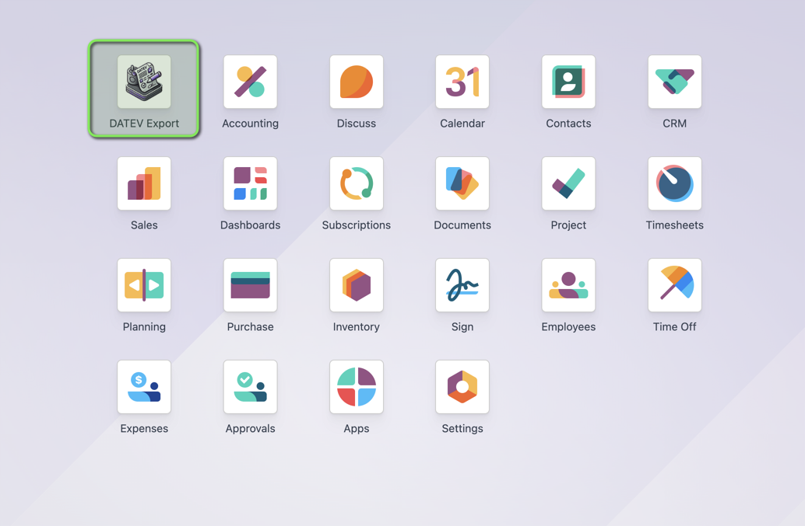
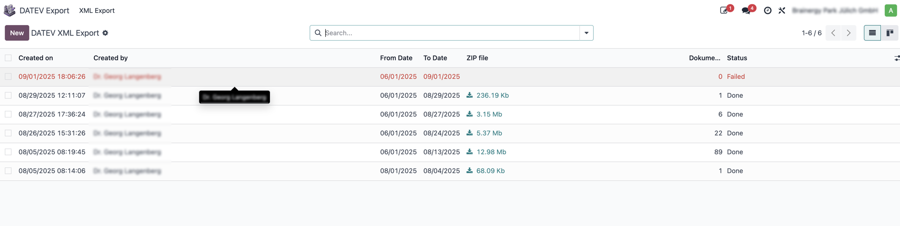
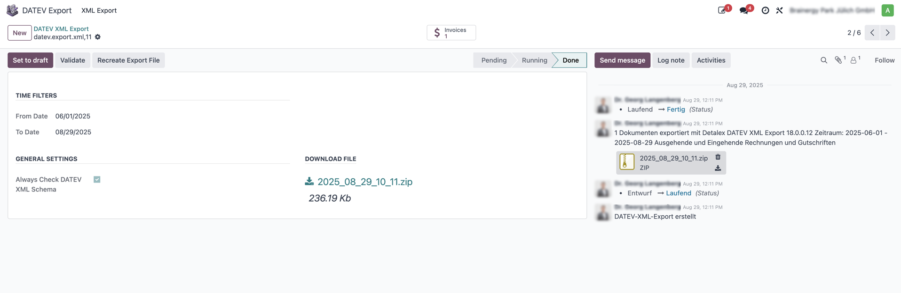

Exportiere Belege in DATEV XML – einfach, intuitiv und prüfsicher.
Der Export ist bewusst einfach gestaltet: Wähle einen Zeitraum. Noch nicht exportierte Belege im Zeitraum werden automatisch einbezogen. Optional prüft eine Validierung, ob alle DATEV-Pflichtangaben vorhanden und formal korrekt sind (z. B. Kundenadressen, PDF‑Anhänge, Rechnungsnummern, Datentypen, Ländercodes). Fehler werden angezeigt und die betroffenen Belege zur schnellen Korrektur verlinkt. Anschließend lädst du einen gültigen DATEV‑XML‑Export inklusive zugehöriger Dateien herunter und kannst ihn in DATEV Unternehmen online einziehen.

1) Kachel „DATEV Export“ im Haupt‑Dashboard – Einstieg in den Exportbereich.

2) Liste der Exporte – Übersicht aller erstellten Exporte mit Status.

3) Export‑Formular – Zeitraum wählen, optional validieren, Export erstellen.Tipp: Nutze die Validierung vor dem Export, um Nacharbeiten zu minimieren.